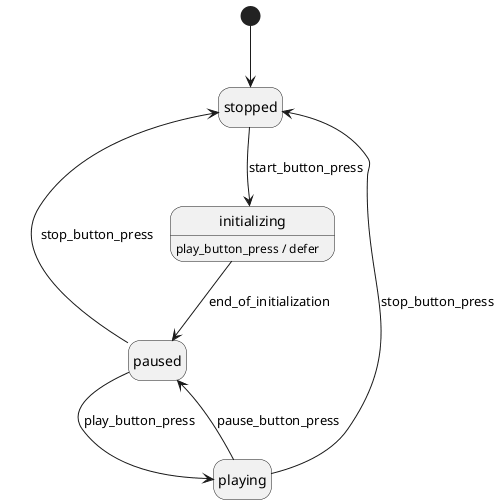

- Generated by
 1.16.1
1.16.1
|
Maki
|
A state can define a set of events it defers. As long as any active state defers an event, the state machine postpones the processing of the occurrences of this event. Once it's no longer the case, the state machine processes the deferred event occurrences.
In the state diagram below, the initializing state defers the play_button_press event.

Here is what happens if the play_button_press event is detected while the initializing state is active:
Use event deferral if your system is sometimes unable to process an event (e.g. a user input, an error, etc.), but you still want to process it as soon as possible.
The example above is a typical one: the system can't process user requests because it needs a couple of seconds to initialize, but it still does it as soon as it's ready.
Available since Maki 1.2.0
Call maki::state_mold::defer() to add an event type to the set of deferred event types of a state: